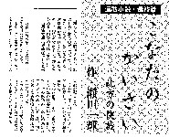

月刊プロ麻雀に連載されていた「こなたのかいさい（瀬田一輝）」という麻雀小説、'05．２月号で終了した。’04、９月号からの半年間の連載なので、結果的には中編小説ということになる。

麻雀小説にしてはヘンなタイトルだと思ったが、読んでみたら面白い。初回から、思わず引き込まれた。そこで毎号、楽しみにしていた。
登場人物は個性あふれるキャラクターの持ち主ばかり。それもなにやら実在の団体や人物を彷彿させる。随所にちりばめられているエピソードも、なんだかどこかで聞いたことがあるような....
それだけでも面白いが、単なる雀界デキゴトロジーのパロディなら、それだけのこと。しかし文章が読ませた。作者の瀬田一輝、第１期阿佐田杯の優勝者とは記憶していたが、まさかこんなに筆が立つとは。次の号が待ち遠しかった麻雀小説なんて、40年前の週刊大衆「麻雀放浪記」以来だった。
それほど面白いと思ったが、ひょっとすると面白いのは初回だけかも知れない。（＾-＾； そこでこの小説に言及するのはもう少し連載を読んでからと思っった。
まずゲーム界のドンが麻雀界に無償で提供するという５億円を巡って、鬼道会の織田無道、じゃなかった、棋道会の醍醐院無道やプロ麻雀源流会の会頭やら、一癖もふた癖もあるキャラクターが動き始める。そこへ逆ヒロインがジャンブル容疑で逮捕される。さぁ話はいよいよ佳境にと思っていたら、いきなり終了してしまった。（゜0゜）
昨年、関西でフリー雀荘の摘発事件があった。「こなたのかいさい」は、そんな摘発を「行き過ぎ」だとして警察が謝る？ようなシチュエーションで終了しているが、まさかそんなくだらんことを書きたかったわけでもないと思うし....
もちろん「いきなり終了」はこっちの思い違いで、最初から短期連載の予定だったのかもしれない。しかしいちおうのオチはついているとしても、突然としか思えない終了はとても残念だった。
これをプロローグとして、ぜひ続編を期待する。万が一、メディアの問題があるなら、ぜひ我がサイトを使ってほしい。ただし原稿料を払う力はない.....(-_-)
|